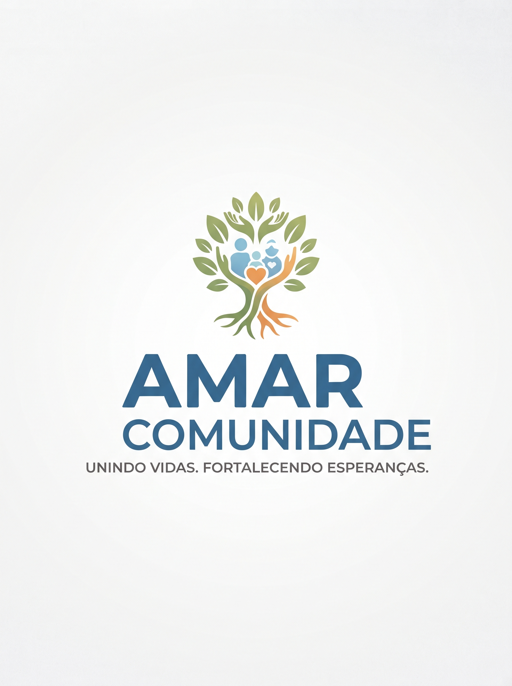

Você já parou para pensar em como funciona uma ONG? A sigla, que significa Organização Não Governamental, é uma entidade de caráter privado, sem fins lucrativos e independente do governo que se dedica a causas sociais, culturais, ambientais, humanitárias, educacionais, de saúde, entre outras.
Uma ONG compõe o que chamamos de terceiro setor – que são organizações que desenvolvem atividades em favor da sociedade e sem objetivo de lucro. Esse conceito foi criado nos Estados Unidos e define como primeiro setor aquele que é constituído pelo Estado e o segundo setor pelos entes privados que buscam fins lucrativos.
O funcionamento de uma ONG tem como base mobilizar recursos financeiros, humanos e materiais para alcançar seus objetivos e promover mudanças positivas na sociedade. Geralmente, a renda é obtida por meio de doações, patrocínios e convênios com governos e outras instituições.
O trabalho das ONGs é essencial por serem agentes de mudança, mobilizando esforços e recursos para causas importantes e, muitas vezes, negligenciadas. Elas complementam o trabalho do governo, atendem a necessidades específicas da sociedade, defendem direitos e contribuem para uma sociedade mais inclusiva, consciente e sustentável.